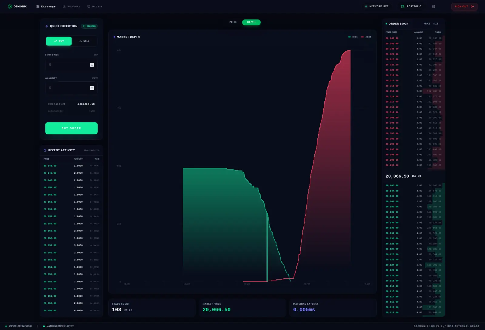

EVENT-DRIVEN SYSTEMS
OBMINNIK.
A trading platform, from order to execution.
A Go limit order book with price-time priority, partial fills, and cancellation, connected to a live market-depth dashboard.
- Fixed-point amounts8-decimal integer amounts for balances and trade settlement.
- Explicit event deliveryPostgreSQL outbox → Kafka-compatible Redpanda.
- Visibility into the systemPrometheus, Grafana, Redis Pub/Sub, and WebSockets.

Under the hood ENGINEERING NOTES
Representing money consistently
Prices, quantities, and balances use integers scaled by 10⁸. Keeping the same scale across the API and matching worker avoids floating-point drift and inconsistent units. Order, trade, and balance updates are batched in a PostgreSQL transaction.
Separating persistence from delivery
The API stores the order and outbox event together. A relay publishes pending events to Redpanda and marks them processed after successful publishing. This makes the database write and the later broker delivery separate, explicit steps.
Read the design decisions